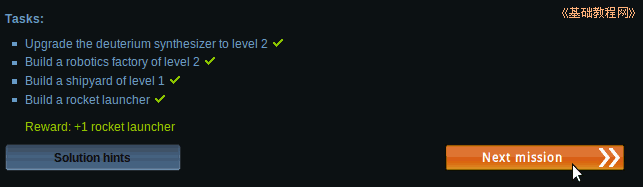
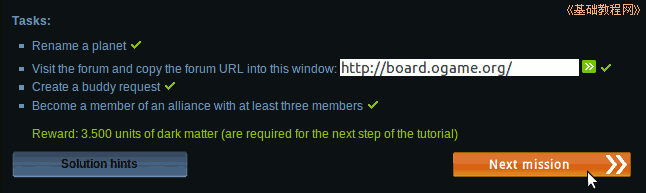

Ogame 银河帝国游戏新手入门
作者：TeliuTe 来源：基础教程网
首次登录会弹出新手任务，以后也可以点左边导航栏第一个右边的问号进入；
1、新手任务
1）进入 http://ogame.org，点右上角红色的“Login”登录；
2）在出来的登录框中，依次选择自己的星球，输入用户名、密码后点“Login”登录；
3）点左边导航栏第一个旁边的问号图标进入；
4）出现一个新手任务列表，上面一排是10个任务，打勾说明已经完成，下边是提示和下一任务按钮；
2、任务列表
1）任务1 - 基础建设，将金属矿升级到4级、晶体矿升级到2级、太阳能发电站升级到4级，
操作完成后回来点“Next mission”下一关继续，获得奖励金属150、晶体75；
操作方法提示：金属矿 晶体矿 重氢合成器
2）任务2 - 防御设施，将重氢合成器升级到2级，机器人工厂升级到2级，造船厂升级到1级，造一个火箭发射器；

操作完成后回来点“Next mission”下一关继续，获得奖励1个火箭发射器；
3）任务3 - 发展资源，将金属矿升级到10级、晶体矿升级到7级、重氢合成器升级到5级；
操作完成后回来点“Next mission”下一关继续，获得奖励2000金属和500晶体；
操作方法提示：升级金属矿 晶体矿 重氢合成器
4）任务4 - 建造飞船，将研究实验室升级到1级、建造一艘小型运输舰、将燃烧引擎升级到2级；
操作完成后回来点“Next mission”下一关继续，获得奖励200重氢；
5）任务5 - 网络交流，重命名自己的星球、访问网站论坛(输入页面下面的board的链接地址http://board.ogame.org/)，发送一个好友请求，加入到一个至少有3人的联盟；

操作完成后回来点“Next mission”下一关继续，获得奖励；
6）任务6 - 商人交易，升级一个资源仓库、召唤一个商人；
操作完成后回来点“Next mission”下一关继续，获得奖励资源仓库增加1级；
7）任务7 - 舰队任务，制造一颗间谍卫星，执行一次间谍任务；
操作完成后回来点“Next mission”下一关继续，获得奖励2颗间谍卫星；
8）任务8 - 探险任务，执行一次探险任务；
操作完成后回来点“Next mission”下一关继续，获得奖励2架重型战斗机、5艘小型运输舰；
操作方法提示：探险任务
9）任务9 - 拓展行星，建立一个殖民星球；
操作完成后回来点“Next mission”下一关继续，获得奖励，免费使用3天指挥官；
操作方法提示：殖民任务
10）任务10 - 回收废墟，回收太空中的战争废墟；
操作完成后回来点“Next mission”下一关继续，获得奖励1艘回收舰；
操作方法提示：回收任务
本节学习了新手任务的基本操作，如果你成功地完成了练习，请继续学习下一课内容；
本教程由86团学校TeliuTe制作|著作权所有
基础教程网：http://teliute.org/
美丽的校园……
转载和引用本站内容，请保留版权信息和本站链接。